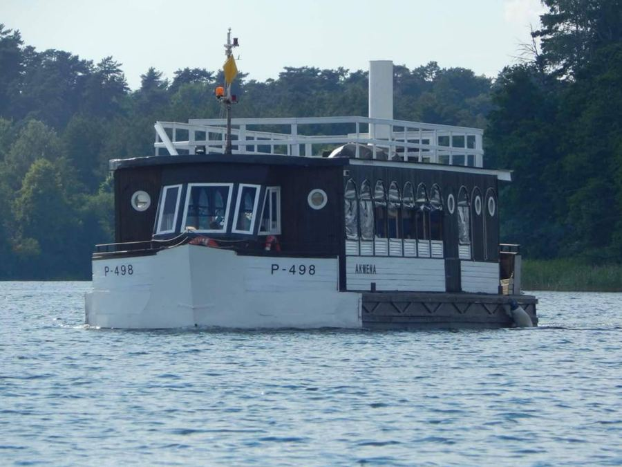
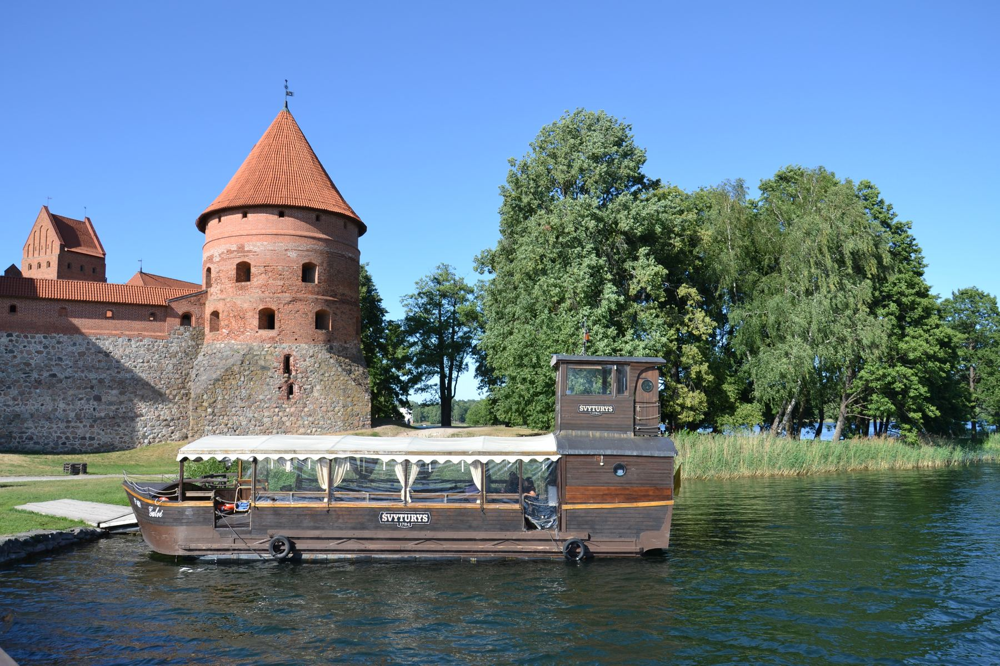
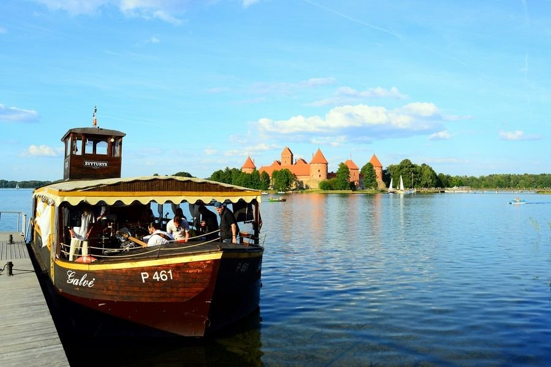
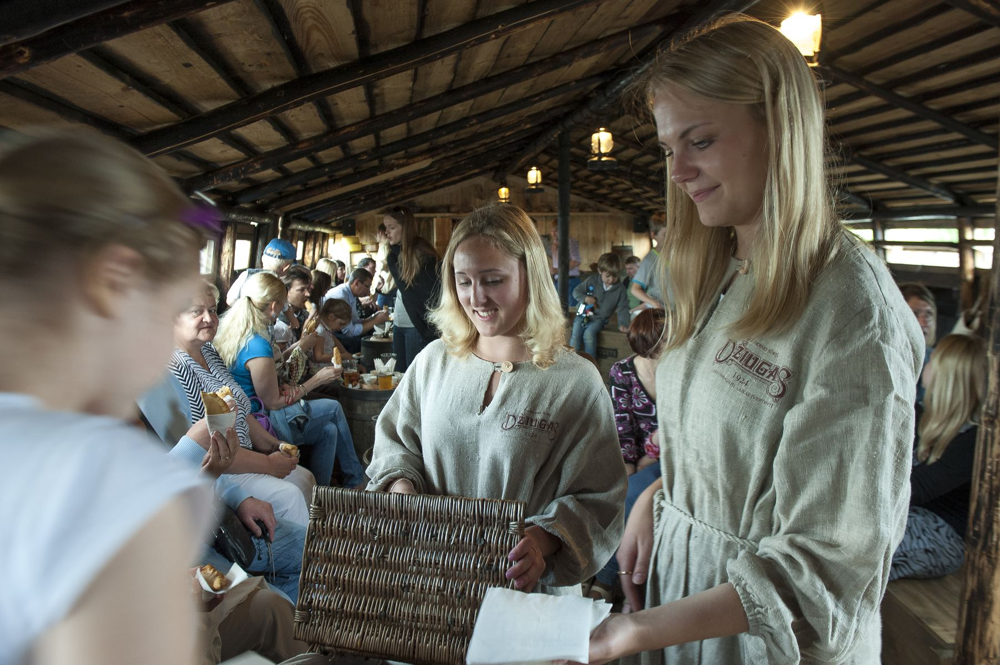
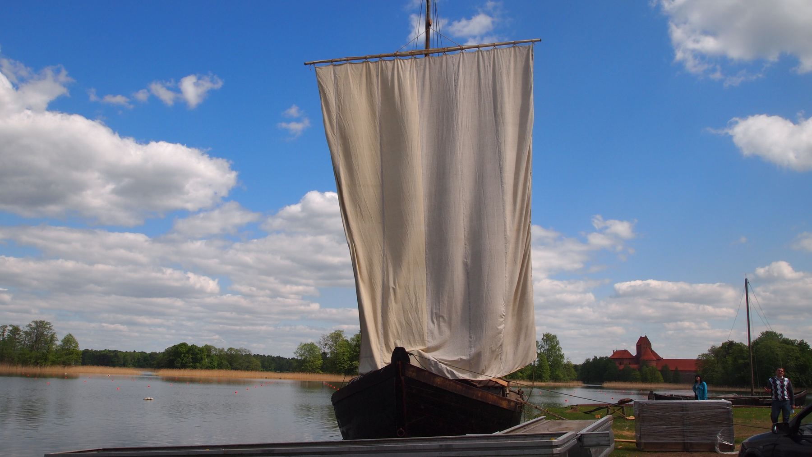
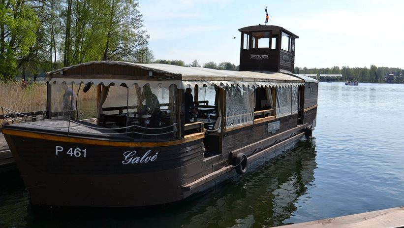
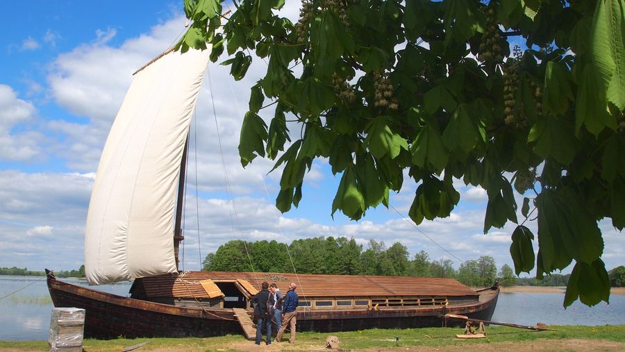

„Akmena“
Reguliarūs reisai kasdien nuo salos pilies prieplaukos.
| Vietų | 40 |
| Paskirtis | ekskursijos |
| Nuoma 1 val. | 269 € |
| Su gidu | 339 € |
| Papildoma val. | 150 € |

45 minučių kelionė laivu aplink Trakų salos pilį: Užutrakio dvaras, Karaimų salos ir pilies bokštai iš ten, iš kur jie buvo sumanyti matyti. Audiogidas lietuvių, anglų, lenkų ir rusų kalbomis.
Pasirinkite, kada plaukiate, ir gaukite patvirtinimą el. paštu. Telefonas lieka tiems, kam patogiau paskambinti.
Vaikams iki 3 metų nemokama. Grupėms nuo 20 asmenų taikome nuolaidą: parašykite arba paskambinkite.
Laivas „Galvė“ talpina iki 50 svečių ir pilnai uždengiamas nuo lietaus. Iki 40 svečių galime pasiūlyti ir „Akmeną“.
„Vytinė“ neplaukia: tai atkurtas LDK laikų prekybinis laivas prie Galvės kranto, tinkamas pamokoms, konferencijoms ir šventėms iki 40 žmonių. Kainą pasakome pagal grupę ir programą.

Reguliarus 45 min. reisas laivu „Akmena“ nuo salos pilies prieplaukos. Audiogidas pasakoja apie pilį, Užutrakio grafų Tiškevičių rūmus ir karaimų istoriją keturiomis kalbomis. Laive mini baras ir jaukus salonas.

Gimtadienis, vestuvės, mergvakaris, įmonės vakaras ar koncertas ant vandens: iki 50 svečių, furšetas ar karšti patiekalai, muzika ir pilis už lango. Laivas pilnai uždengiamas nuo lietaus ir vėjo, todėl šventė vyksta bet kokiu oru.

Vienintelis Lietuvoje atkurtas LDK laikų prekybinis laivas, įkurdintas priešais salos pilį. Moksleiviai žaidžia ir gabena krovinius virtualioje kelionėje, suaugę sužino, kaip XIX a. prekės keliavo Lietuvos upėmis. Tinka integruotoms pamokoms ir konferencijoms.
Spustelėkite sustojimą: taip pat veiks ir audiogidas laive, tik su balsu.

Reguliarūs reisai kasdien nuo salos pilies prieplaukos.
| Vietų | 40 |
| Paskirtis | ekskursijos |
| Nuoma 1 val. | 269 € |
| Su gidu | 339 € |
| Papildoma val. | 150 € |

Šventėms ir koncertams: čia kasmet vyksta „Galvės JAZZ fiesta“.
| Vietų | 50 |
| Paskirtis | šventės, nuoma |
| Nuoma 1 val. | 269 € |
| Su gidu | 339 € |
| Papildoma val. | 150 € |

Istorinis prekybinis laivas ant kranto: edukacijos, pamokos, konferencijos.
| Vietų | 40 |
| Paskirtis | edukacija |
| Plaukia | ne |
| Kaina | pagal grupę |
Reisas, data, žmonių skaičius. Matote laisvas vietas iš karto.
Kortele arba pavedimu. Bilietas ir žemėlapis atkeliauja el. paštu ir SMS.
Prieplauka prie salos pilies tilto. Parodote bilietą telefone, jokio spausdinimo.
Laivai uždengiami nuo lietaus. Jei reisą atšaukiame mes, grąžiname pinigus tą pačią dieną.
[Čia bus tikras Google atsiliepimas: jį įkelia sistema, nereikia kopijuoti ranka.]
[Antras atsiliepimas. Pasirinkite, kuriuos rodyti, vienu spustelėjimu.]
[Trečias atsiliepimas lenkų ar anglų kalba užsienio svečiams.]
Kuponas ekskursijai dviem, šeimai ar valandai privačiame laive. Atkeliauja el. paštu per minutę, galioja visą kitą sezoną, kodą įvedate rezervuodami.
Plaukiame. Abu laivai pilnai uždengiami nuo lietaus ir vėjo, salone šilta. Reisą atšaukiame tik esant audrai; tada grąžiname pinigus arba perkeliame į kitą laiką, kaip jums patogiau.
Laivybos sezonu nuo gegužės 1 d. iki spalio 1 d., kasdien nuo salos pilies prieplaukos. Esant geram orui sezoną pradedame anksčiau ir pratęsiame. Tikslūs laikai rodomi rezervacijos lange.
Ekskursijai galite ateiti ir be rezervacijos, jei liko vietų, bet savaitgaliais ir liepą-rugpjūtį laivas dažnai pilnas. Privačiai nuomai ir edukacijoms rezervacija būtina.
Vaikams iki 3 metų nemokamai, nuo 3 iki 12 metų 5 €. Vežimėlį galima įsinešti į laivą.
Audiogidas lietuvių, anglų, lenkų ir rusų kalbomis. Privačiam reisui galime pakviesti gyvą gidą (+70 €).
Prieplauka prie salos pilies tilto, Karaimų g. Artimiausia mokama aikštelė prie pilies, 3 min. pėsčiomis. Mūsų biuras: Gedimino g. 26, Trakai.
Taip. Taip pat paruošiame furšetą ar karštus patiekalus laive, pasiūlome muzikantą ar DJ. Parašykite, ko norėtumėte, ir atsiųsime meniu.
Perkate internetu pasirinktai sumai arba konkrečiam reisui, kuponas atkeliauja el. paštu su kodu. Gavėjas rezervuoja patogų laiką ir įveda kodą. Galioja iki kito sezono pabaigos.
Prototipe mokėjimas neatliekamas. Gyvoje versijoje čia atsidaro kortelės arba banko langas (Paysera, Stripe ar Montonio), o bilietas išsiunčiamas automatiškai.